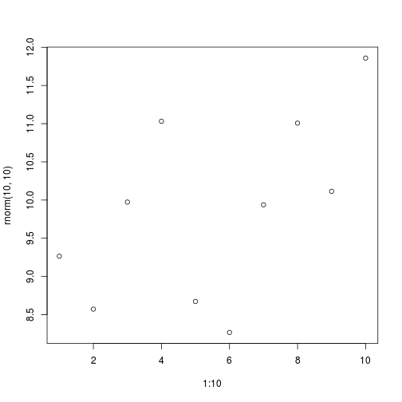

Predictive Analytics in R
August 25, 2015
Read-And-Delete
- Edit YAML front matter
- Write using R Markdown
- Use an empty line followed by three dashes to separate slides!
Slide 2
plot(1:10, rnorm(10, 10))

What is Predictive Modeling?
Given a set of predictor variables (X),
Predict an outcome (Y)
| Sepal Length [X1] | Sepal Width [X2] | Petal Length [X3] | Petal Width [X4] | Species [Y] |
|---|---|---|---|---|
| 6.5 | 2.8 | 4.6 | 1.5 | ??? |

Machine learning / Predictive analytics / predictive modeling / Statistical learning / etc.
variable / feature / covariate / predictors
these are notes
Our guess:
| Sepal Length [X1] | Sepal Width [X2] | Petal Length [X3] | Petal Width [X4] | Species [Y] |
|---|---|---|---|---|
| 6.5 | 2.8 | 4.6 | 1.5 | ??? |
<!---- Arrow Image --->

Equation
Equation filled in
How do we estimate these parameters:
| Sepal Length [X1] | Sepal Width [X2] | Petal Length [X3] | Petal Width [X4] | Species [Y] |
|---|---|---|---|---|
| 5.1 | 3.5 | 1.4 | 0.2 | setosa |
| 4.9 | 3.0 | 1.4 | 0.2 | setosa |
| 7.0 | 3.2 | 4.7 | 1.4 | versicolor |
| 6.4 | 3.2 | 4.5 | 1.5 | versicolor |
| 6.3 | 3.3 | 6.0 | 2.5 | virginica |
| 5.8 | 2.7 | 5.1 | 1.9 | virginica |
Use this historical data to optimize the best fit for our future models:
We use this dataset to find:
- Mean for each measurements for each class
Implementation in R:
library(MASS)
trainset <- iris[-example_row, ]
fit.lda <- lda(Species ~ ., data=trainset, prior=c(1/3, 1/3, 1/3))
pred <- predict(fit.lda, iris[example_row, ])
round(pred$posterior, 3)
## setosa versicolor virginica
## 55 0 0.995 0.005
kable(head(iris))
| Sepal.Length | Sepal.Width | Petal.Length | Petal.Width | Species |
|---|---|---|---|---|
| 5.1 | 3.5 | 1.4 | 0.2 | setosa |
| 4.9 | 3.0 | 1.4 | 0.2 | setosa |
| 4.7 | 3.2 | 1.3 | 0.2 | setosa |
| 4.6 | 3.1 | 1.5 | 0.2 | setosa |
| 5.0 | 3.6 | 1.4 | 0.2 | setosa |
| 5.4 | 3.9 | 1.7 | 0.4 | setosa |